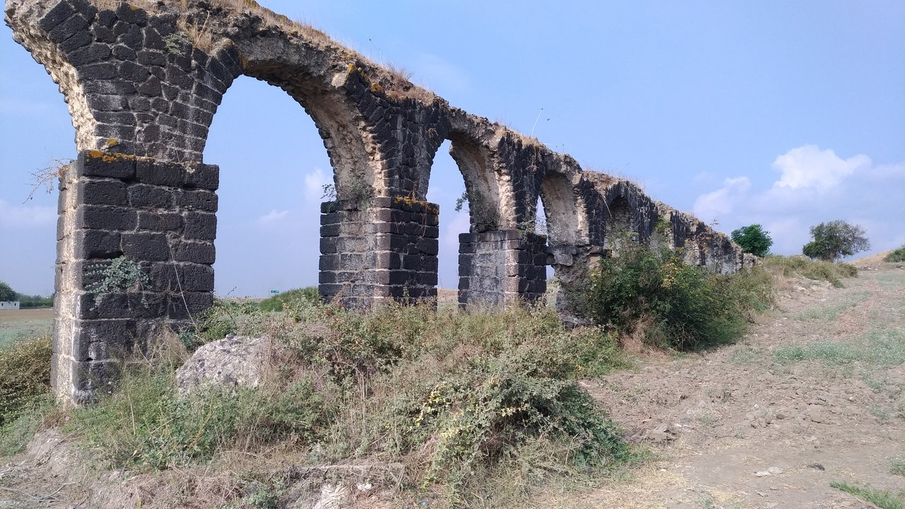
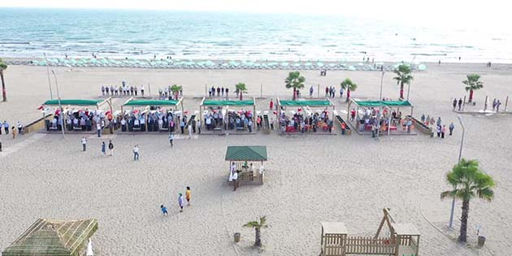

Erzin,
Hatay'ın bir ilçesidir.
Osmaniye il merkezine 23, Dörtyol ilçesine 15 ve İskenderun ilçesine 45 km mesafede, E-5 karayolu, Toprakkale-İskenderun demiryolu ve yine Toprakkale-İskenderun TEM otoyolunun kesiştiği istasyondan, 7 km’lik yolu kat ederek ilçe merkezine ulaşılır.
İlçe merkezinin 35.137 olan nüfusu köylerle birlikte toplam 41.700 (2019 yılı genel nüfus sayımına göre) olup, turizmin canlandırdığı yaz aylarında 60.000’i geçer aldığı göçlerle sürekli artar. Sırtı Nur dağlarına dayanıp ayakları Akdeniz’e doğru uzanan ilçenin 415 km² yüzölçümüne karşılık merkezde rakımı 165 metredir.
Ekonomi
İlçenin ekonomisi; tarıma dayalı olup başlıca gelir kaynağı narenciye üretimidir. Tahıl ve sebze yetiştiriciliği ile son zamanlarda hızla artan seracılık sektörü de önemli ekonomik kaynaklarındandır. Ayrıca İskenderun Demir-Çelik Fabrikalarının da ekonomiye etkisi bulunmaktadır. İlçede 2 tane sulama kooperatifi bulunmaktadır.
Yaklaşık 66.000 dekar Narenciye ve 65.000 dekar tahıl ekim alanının bulunduğu ilçede tüm narenciye çeşitleri (Vaşington, greyfurt, mandalina, limon, yafa, valensiye,minola vs.) üretilmektedir. 1973 yılında Ernar Tarımsal Kalkınma Kooperatifi kurulmuştur. Turunçgil çeşitleri; özellikle Satsuma (Rize) Mandalini, Rusya, Avrupa Birliği, İngiltere gibi ülkelere ihraç edilmektedir.
Tarihçe
Erzin'in 1473 Otlukbeli Savaşı'ndan sonra çoğunluğu Akkoyunlulardan oluşan Türkmen Boyları'nın, İssos Ovası'nın kuzeyindeki bir alan olan Karahüyük Yöresi'ne göçleri ve zamanla bazılarının şimdiki Yoncadüzü ve Gökdere arasındaki "Akdam", bazılarının da Erzin in batısındaki "Şeyhin Ocağı" bölgelerine gelerek buraları yurt edinmeleri sonrasında kurulduğu ve adının da Orta Asya da bulunan Tannu (Tanrı) dağları civarındaki (Tannu Ola) Erzin şehrinin isminden geldiği sanılmaktadır.[kaynak belirtilmeli] Yalnız Türkmenlerin, Karahüyükten 1695-1700 yıllarında buraya gelmeden önce Selçuklu Hanedanı ve Memluklular zamanında bazı Türk boylarınında (Özerler, Tebüklüler-Tıbıklar, Pındıklar) bölgeye geldikleri tahmin ediliyor.[kaynak belirtilmeli] 1903 yılında Mutasarrufluk olan Erzin 1906 yılında Bucak haline dönüştürülmüş, 1939 yılında Adana'dan ayrılarak Hatay iline bağlanmıştır.
İssos Şehri Su Kemerleri

İssos, Akdenizin doğu kesiminde ve dolayısıyla Erzin sınırları içerisinde yer alır. Şehrin kalıntılarına Erzin'e 7 km mesafedeki İstasyon Mevkiinde rastlamak mümkündür. Mezopotamya'yı Yunan kültürüne, Anadoluyu İslam Ülkelerine bağlayan merkez konumundaki İssos;[kaynak belirtilmeli] Bizans, Geç Hitit, Selaukos, Pers ve Osmanlı İmparatorluğuna ev sahipliği yapmıştır.[kaynak belirtilmeli] İssos kalıntılarının içinde 1–2 km. uzunluğunda, yüksekliği ise yer yer 7–8 m olan ve hâlâ ayakta kalmayı başaran su kanalları bulunmaktadır. Bu su kanalları Akdeniz'e Cenevizli gemicilere Nur Dağlarının eteklerinden su iletme kapsamında yapılmıştır.[kaynak belirtilmeli]
Büyük İskender'in zaferleriyle sonuçlanan MÖ 333 yılında Pers kralı III. Darius'la yaptığı büyük bir savaşa sahne olan bölge asıl altın çağını Roma döneminde yaşamış ve bu zamandaki imar faaliyetleriyle yeni bir kimlik kazanmıştır.
Erzin Ilıca ve İçmeleri
İlçenin 3 km doğusunda yer alan Erzin içmeleri özellikle yaz aylarında iç turizme hitap eder.[kaynak belirtilmeli] Belediye Moteli ile Termal Otel ve şahıslara ait pansiyonlarla artan talebi karşılamakta güçlük çekmektedir.[kaynak belirtilmeli] Çevre,maki ve meşe-çam karışık bir orman örtüsü ile kaplıdır. Sıcaklığı 24 derece, pH sı 6,7 olan Erzin İçme Suları bikarbonatlı, sülfatlı, magnezyumlu, kalsiyumlu, karbondioksitli ve bromürlü bir bileşime sahiptir. İçme kürlerine elverişli olan bu sular sindirim sistemi hastalıkları,böbrek ve idrar yolları rahatsızlıkları ve metabolizma bozukluklarına olumlu etki yapar.[kaynak belirtilmeli]
Kaplıca ve içme sularımızın sağlık etkinliklerinin (olumlu etki yaptıkları hastalıkların) İstanbul Üniversitesi Tıp Fakültesi, Tıbbi Ekoloji ve Hidroklimatoloji Ana Bilim Dalı Başkanlığınca (Çekmece-Nükleer Araştırma Enstitüsü) ile işbirliği içinde yapılmaktadır.[kaynak belirtilmeli]
Karıncalı Yaylası
Nur Dağlarının zirvelerinden olan ve yaklaşık 2000 m. yükseklikte ki uzaktan bakıldığında çıplak gibi görünen[kaynak belirtilmeli] ve gerçekte otsu bitkilerle kaplı tepe “Keldaz”olarak bilinir. Zirveden 100 – 150 m. inildiğinde dağ eteklerine kadar uzanan çoğunluğu çam olmak üzere, gürgen, sedir, mezdeki, ladin ve ardıçla kaplıdır.
Burnaz Plajı

İlçeye 22 km. mesafedeki Burnaz Plajı, günübirlik olarak hizmet vermektedir. Sahil 6 km. uzunluğunda ve 1 km. genişliğindedir. Sahil kenarında bulunan 412.320 m² lik alanın Maliye Bakanlığı Millî Emlak Genel Müdürlüğünden kiralayarak kamping Alanı olarak ve günübirlik turizm alanı olarak halkın hizmetine sunulması için imar çalışmaları tamamlanmıştır. Kiralanmış olan bu alan içerisine imara uygun ve tek tip prefabrik evler yapılmaya başlanmıştır.
217351015
Iskenderun Teknik Universitesi